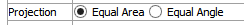
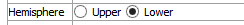
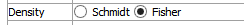
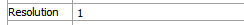
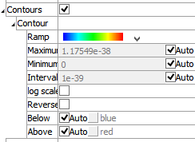
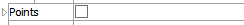
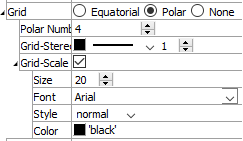
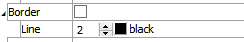

裂隙赤平投影网
说明
赤平投影网的极点方位。
属性
显示

为各个不同的集合设置显示的关闭/开启。
显示（项目名称上的复选框）：勾选列表中的某一项可将其包含在显示中。取消勾选该项则将其隐藏。
投影

设置赤平投影网的投影方式。
半球

设置赤平投影网上显示哪个半球。
密度

设置赤平投影网上显示哪种密度。
分辨率

设置 ??? 的分辨率
等值线

勾选时包含等值线。
等值线：用于控制等值线绘制选项的设置容器。
色带：设置用于渲染的颜色色带。五个选项按选择框中的显示顺序依次为：彩虹（蓝到红）、灰度、蓝-白-红、蓝-青-白-黄-红、绿-白-红。
最大值：自动（勾选 自动）或使用指定值（取消勾选 自动）设置颜色色带的最高值（右端）。高于 最大值 的值将用 高于 颜色填充。
最小值：自动（勾选 自动）或使用指定值（取消勾选 自动）设置颜色色带的最低值（左端）。低于 最小值 的值将用 低于 颜色填充。
间隔数：指定渲染时使用的颜色间隔数量；如果勾选 自动，此值默认为 8-16 之间的某个数字。
对数刻度：勾选后指定颜色间隔按对数间隔分布。
反转：勾选时反转颜色色带的颜色顺序。
低于：指定用于低于 最小值 的值的颜色。勾选 自动 时使用颜色色带的左端颜色。取消勾选时，由色板控件指定颜色。
高于：指定用于高于 最大值 的值的颜色。勾选 自动 时使用颜色色带的右端颜色。取消勾选时，由色板控件指定颜色。
点

勾选时包含 ??? 点。
网格

设置所渲染赤平投影网网格的属性。
网格：将网格方向设为以下之一：“赤道式”、“极式”或无。“无”的效果是关闭网格显示。
对于 赤道式 网格：
纬线：设置网格中纬线的数量。
经线：设置网格中经线的数量。
对于 极式 网格：
极环数：设置极环的数量。赤道式 和 极式 网格共有的附加元素：
网格-投影网：设置网格的颜色、线样式和线粗细。
网格-比例：为网格包含比例标签（勾选时），并有用于设置比例标签文字的大小、字体、样式和颜色的附加控制项。
边框

设置绘图项边框的显示。
边框：勾选时显示边框。此设置还包含以下设置。
线：设置用于渲染边框的线的粗细和颜色。
位置

设置绘图项的位置。
位置：分别指定该项左下角的下边距和左边距位置，以可用渲染区域的百分比表示。
若这些值的设置使得在当前 size 设置下该项超出可用渲染区域，则大小将自动向下调整以适应该区域。另见 size 属性。
大小

设置绘图项的大小。
大小：分别指定该项的 \(x\) 和 \(y\) 大小，以可用渲染区域的百分比表示。另见 position 属性。
透明度

设置绘图项的透明度。此设置不适用于二维模型对象。
透明度：为项目应用透明度（勾选时）。开启时，透明度设为默认值 70，并处于“锁定”状态。锁定时，可用的透明度范围被限制在 70（最低，略有透明）到 100（最高，完全不可见）。要访问完整的透明度取值范围（0-100），请按下锁形图标以“解锁”透明度范围；图标会随之改变（
）。
使用帮助按钮可获取有关此特定属性的帮助。
注意
应当提醒用户：低于 70 的值往往“更不透明”得难以察觉，并且可能导致深度透视看起来奇怪或不正确。
图例
设置该项在绘图图例中的显示。所有绘图项至少都具有 标题 属性。
图例：在图例中显示（勾选）有关该绘图项的所有信息。
标题：在图例中显示（勾选）该绘图项的标题。“别名：”字段可用于为该绘图项指定自定义标题。
大小：设置图例中文本的大小。
字体：设置文本所用的字体面。
样式：设置文本样式（选项为常规、粗体、斜体、粗斜体）。
颜色：设置文本颜色。
在 标题 下方，裂隙赤平投影网 绘图项还在图例中提供用于 半球、网格-投影网、极点、等值线 和 颜色（其中包含两个子项：标签 和 标题）的控制项。各自的子属性与 标题 的子属性相同。
| 这些内容对您有帮助吗？… | FLAC3D © 2019, Itasca | 原文更新于 2020 年 10 月 8 日 |